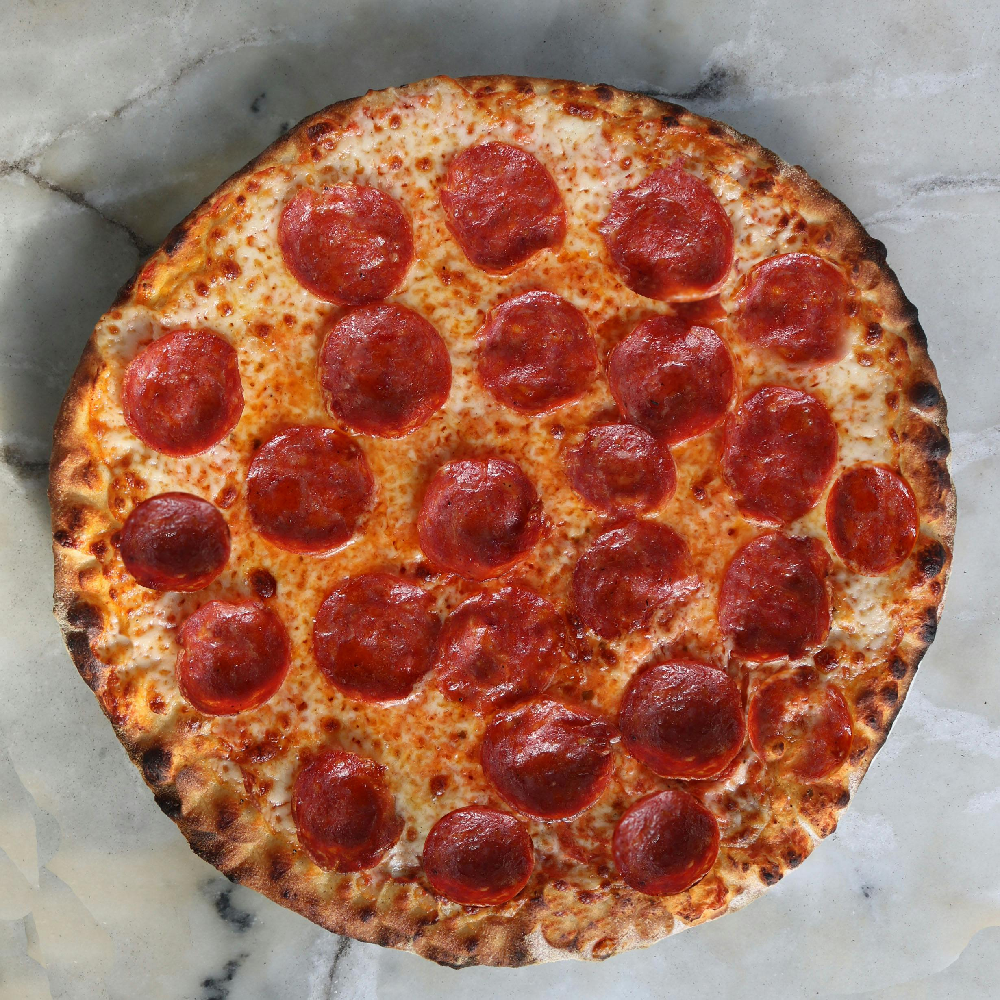

Easy Homemade Pizza
Home
This is a great recipe when you don't want to wait for the dough to rise. You just mix it and
allow it to rest for 5 minutes and then it's ready to go! It yields a soft, chewy crust.

Prep Time: 10 mins
Cook Time: 15 mins
Addition Time: 20 mins
Total Time: 45 mins
Servings: 8
Ingredients
- 1 cup warm water (110 degrees F/45 degrees C)
- 1 (.25 ounce) package active dry yeast
- 1 teaspoon white sugar
- 2 ½ cups bread flour
- 2 tablespoons olive oil
- 1 teaspoon salt
- 50g Tomato Sauce
- 100g Cheese
- 100g Pepperoni
Instructions
- Gather all ingredients. Preheat oven to 450 degrees F (230 degrees C), and lightly grease a pizza pan.
- Place warm water in a bowl; add yeast and sugar. Mix and let stand until creamy, about 10 minutes.
- Add flour, oil, and salt to the yeast mixture; beat until smooth. You can do this by hand or use a
stand mixer fitted with a dough hook to make it easier.
- Let rest for 5 minutes.
- Turn dough out onto a lightly floured surface and pat or roll into a 12-inch circle.
- Transfer to the prepared pizza pan.
- Spread crust with sauce and topping of your choice in our case 50g Tomato Sauce, 100g Cheese, and 100g Pepperoni.
- Bake in the preheated oven until golden brown, 15 to 20 minutes. Remove from the oven and let cool for 5 minutes before serving.
Nutrition Facts (per serving)
calories: 203
Fat: 7g
Carbs: 29g
Protein: 12g